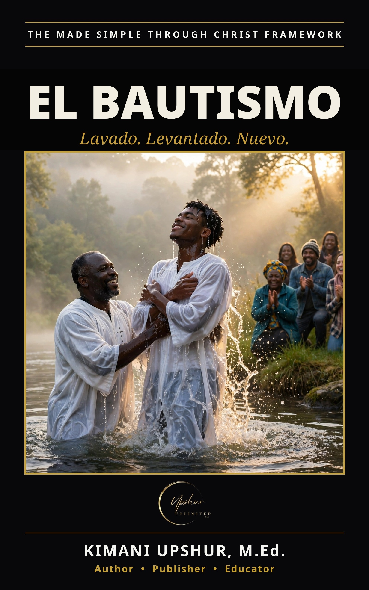

El Bautismo
Una guía bíblica para ser sepultado y resucitado con Cristo
por Kimani Upshur, M.Ed.
¿Prefieres la edición en inglés? Baptism — read in English
**Hay un momento en la vida de todo creyente en el que la fe se hace pública: el momento de bajar a las aguas del bautismo y salir de ellas a una vida nueva.** Pero muchos creyentes cargan preguntas durante años. ¿Estoy listo? ¿El bautismo me salva? ¿Y si fui rociado de bebé? ¿Y si ya me bauticé una vez?
El Bautismo responde esas preguntas con sencillez, desde la Escritura. En catorce capítulos breves recorrerás lo que el bautismo realmente es y lo que no es: un acto de obediencia que Jesús mismo mandó y vivió; el bautismo del creyente que ha oído, creído y respondido; el agua en el Antiguo Testamento, desde el mar que Israel cruzó hasta el Jordán; los modos — inmersión, aspersión y efusión — tratados con honestidad y sin contiendas; una mirada gentil y bíblica al bautismo de infantes; cómo preparar tu corazón, qué esperar el día mismo, y cómo vivir después de salir del agua. Pedro lo resume así: el bautismo nos salva «no quitando las inmundicias de la carne, sino como demanda de una buena conciencia delante de Dios» (1 Pedro 3:21 (RVR1909)) — la señal externa de la gracia que Dios ya obró por dentro, porque «somos sepultados juntamente con él á muerte por el bautismo; para que como Cristo resucitó de los muertos por la gloria del Padre, así también nosotros andemos en novedad de vida» (Romanos 6:4 (RVR1909)).
El apéndice responde con respuestas directas las preguntas honestas que la gente hace — ¿tengo que bautizarme para ir al cielo?, ¿quién puede bautizarme?, ¿qué digo?, ¿qué pasa si peco después? — y el libro cierra con una oración. Ideal para el nuevo creyente listo para obedecer, para el cristiano que ha pospuesto este paso por años y para padres que quieren responder bien a sus hijos.
Kimani Upshur, M.Ed., escribe enseñanza bíblica sencilla y directa para la gente común: información difícil, hecha sencilla.
En catorce capítulos claros y directos descubrirás:
- Lo que el bautismo realmente es
- Por qué Jesús fue bautizado
- El mandato de la gran comisión
- El nombre del Padre, del hijo y del Espíritu Santo
- Lo que el bautismo no es
- El bautismo del creyente: ¿para quién es?
- El agua en el antiguo testamento
- Inmersión, aspersión, efusión: los modos
- El bautismo de infantes: una mirada gentil
- Preparando tu corazón
- El día en sí: qué esperar
- Saliendo del agua
- Después del bautismo: ¿y ahora qué?
- ¿Deberías bautizarte otra vez?
- Editorial
- Upshur Unlimited LLC
- Autor
- Kimani Upshur, M.Ed.
- Formato
- Libro electrónico
- Idioma
- Español
- Precio
- $4.99
- Capítulos
- 14
- Escritura
- Biblia Reina-Valera 1909 (RVR1909)
Más en español
El departamento de libros en español de Upshur Unlimited LLC seguirá creciendo con nuevas ediciones verificadas.